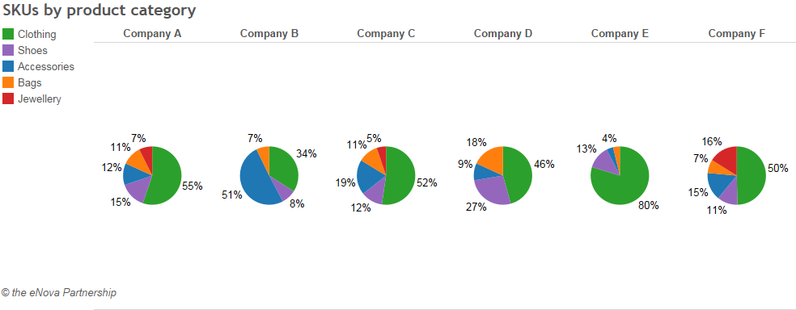
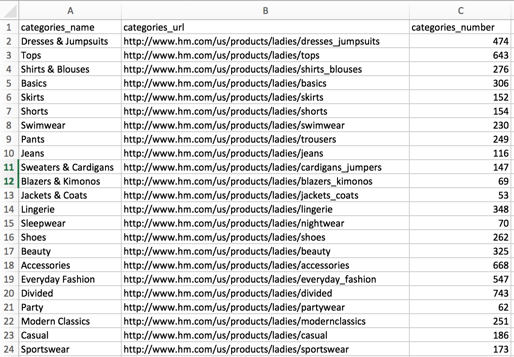
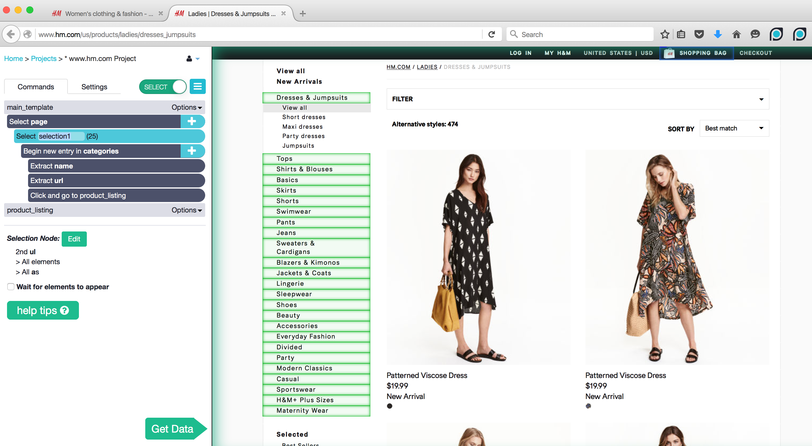
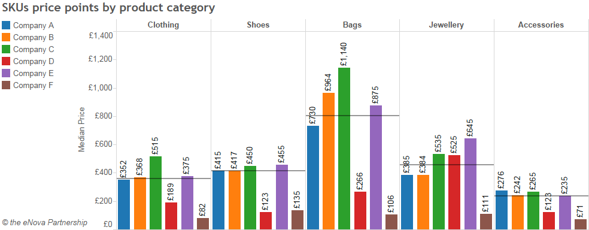
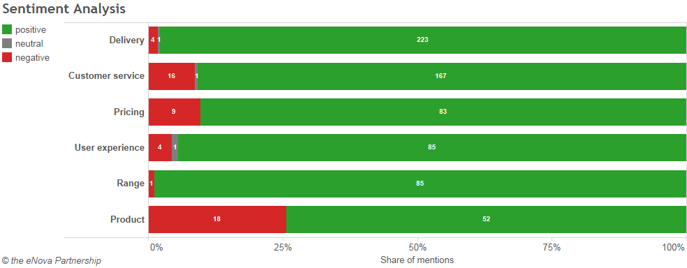
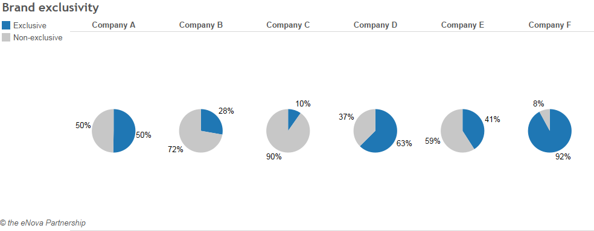

Commercial due diligence, the assessment of a company’s business relative to its market, has for long shied away from the use of big data and advanced analytics tools.
Traditionally, commercial due diligence involves undertaking primary research on customers, suppliers and the market at large in order to provide alternative scenarios to the management forecasted growth estimates. The process often spans over several weeks, involving a handful of full-time analysts contracted from a specialized market research company.
Research analysts often use already available data sets or spend hours copying and pasting data to get market statistics they need. While traditional commercial due diligence provides essential information for investors, analysts more often than not rely on a narrow set of data points.
As a result, they only paint a broad-brush view of the business based on a sample of censuses and analyst estimates. But a better alternative exists. By leveraging big data, web scraping and advanced analytics tools, such as ParseHub, commercial due diligence has the potential to provide novel and more accurate business insights.
Web scraping can be used to gather extra data points available online about companies you are trying to analyze. It is a great technique that will help you find pricing, product and competitor information about eCommerce and retail business.
Below you will find some useful ways to analyze and compare eCommerce companies, based on data they available on the online.
1. Understanding the Product Mix of a Company
The product mix is a key characteristic to better understand a retailers offering. Scraping data from an online eCommerce platform can easily be done using ParseHub, without the hurdle of coding web scraping scripts. With the right metrics parsed, the range can be drilled down at the category or sub-category level to help asses a company’s product mix compared to its competitors.
In the example below, we can clearly see that Company B sells more products in the accessories category, while other companies sell a more diversified mix of product categories.

Almost all eCommerce or online retail websites display products in different categories, by brand,type of products, price, etc.
To do a product analysis:
- Create a separate project for each eCommerce website that you want to scrape with ParseHub.
- Tell ParseHub to scrape and open all of the categories on the websites automatically.
- Collect the number of products in each category
- Do a quick product analysis.
- Visualize the number of products in each category by website in Tableau.
This eCommerce tutorial will show you how to get the number of products in each category for a fashion retailer.
Excel Data on Product Categories

ParseHub Desktop App

2. Understanding the Pricing Structure of a Company
Similarly, looking at the median price by product category provides a compelling way to benchmark a firms pricing strategy relative to its competitors. An additional interesting metric could be to look at product discounts in order to get an idea of discount seasons and the volume of discounted products as a share of total inventory. Doing a pricing and discount analysis can tell you how a business sustains its online sales.
Company A’s pricing is in line with that of its peers in most categories, while company C has much higher prices, especially for bags.

To do a pricing analysis:
- Build on the projects set up in part 1 of this tutorial and extract more information
- Scrape all of the products in each category - including the name and the price
- Get all of the products that have discounts and calculate the discount % directly in ParseHub
- Do a fast pricing analysis
- Visualize the median price per product category by website in Tableau
3. Understanding the Brand Exclusivity of a Company
How to assess the relative value proposition of a fashion retailer? For a multi-brand platform, the relative exclusivity of its products and brands on sale constitutes a key competitive differentiator. In that respect, Company A seems to score average in terms of value proposition. About half of its brands on sale are exclusive compared to the selected competitor set, yet other retailers offer up to 92% off exclusive brands. Depending on the characteristics of the market, whether price or value driven, the relative exclusivity of a brand/product range can be a strong predictor of future growth.

4. Understanding the Customer Sentiment of a Company
The web is full of customer comments and product reviews. This type of semi-structured data can especially be found in social networks such as Twitter and review platforms such as Yelp and Trustpilot, to name but a few. Harnessing such data can reveal some patterns about a retailers perceived strengths and weaknesses.
Customers are overtly positive about Company’s A delivery service, while product quality seems to demonstrate some concern (although the sample size is relatively low). This type of data would be especially interesting to look at historically in order to identify shifts in customer behavior (for instance, following a new pricing strategy, or a change in supplier / stock management).
To do a company sentiment analysis:
- Build on the projects set up in step 1 and 2 of this tutorial to extract more data
- Get the star rating for each product
- Scrape the text data for all of the reviews
- Use a sentiment analysis open source framework or a tool available online to analyze all of the reviews.
- Use Tableau to visualize positive, negative and neutral reviews analysis for all of the eCommerce websites

In light of data analytics tools currently available, the scope of improvement in the way commercial due diligence is run appears limitless.
Over the past years, these tools have become more widespread and a lot of progress has been made to facilitate their use. However, it is vital to remain focused on the project goals when dealing with vast amounts of data. Data driven research too often fails to address the most salient business issues. More care must be made when prioritizing the analysis on the most relevant aspects of a business, while also highlighting the limitations of the data at hand. Yet, we are still at the commencement of a broader transformation in which big data will inform ever more strategic business decisions.
Original copy edited by Angelina Fomina.